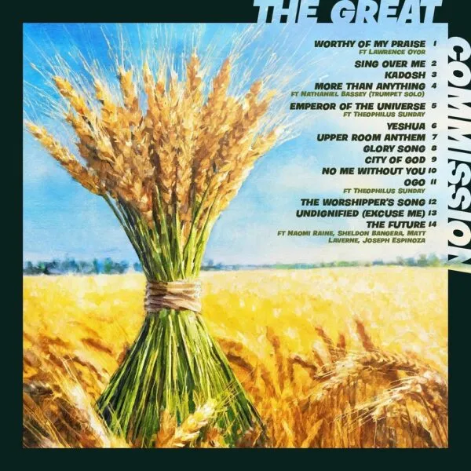
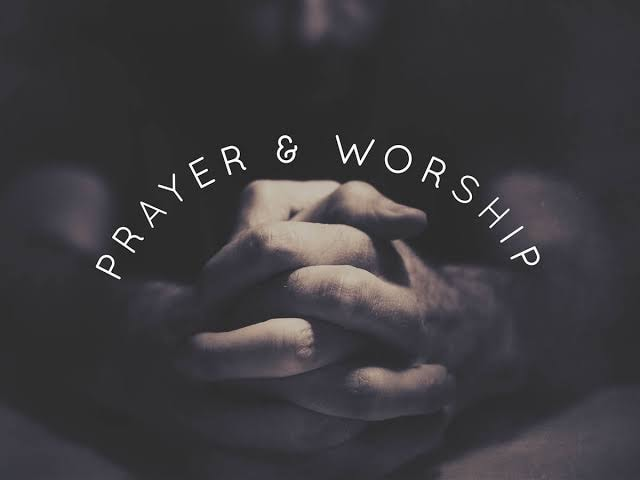

welcome to my homepage get multiple gospel songs, videos, trending sound
Dunsin Oyekan, the renowned gospel music minister and worship leader
, has recently released a remarkable new song titled,“City Of God (Live).”
This powerful track is now available for streaming and
downloading on all major digital platforms

info
The song “City Of God (Live)” moves in line with Revelation 22:2, which emphasizes the healing
and spiritual
significance of the tree of life, aligning with the song’s powerful message of faith and worship.
This captivating live recording showcases Dunsin’s exceptional talent and heartfelt lyrics,
delivering a powerful message of faith and worship to listeners worldwide.
The song is a soul-stirring anthem
that invites listeners to profoundly experience the presence of God.
Download Below
DOWNLOADThe renowned Nigerian Popular Gospel Music minister, songwriter, and anointed worshiper THEOPHILUS SUNDAY performs a worship song that would surely cause blessings to come to you titled “I Speak Spirit“.

Eternal Harmony is a gospel website, you can download your favorite sound here
you can also contact us on eternalharmony@gmail.com.

eternalharmony@gmail.com